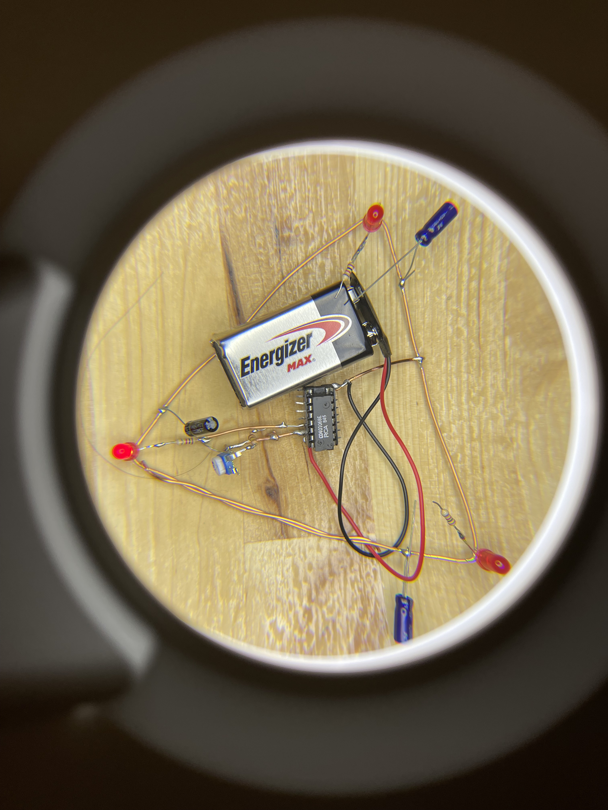
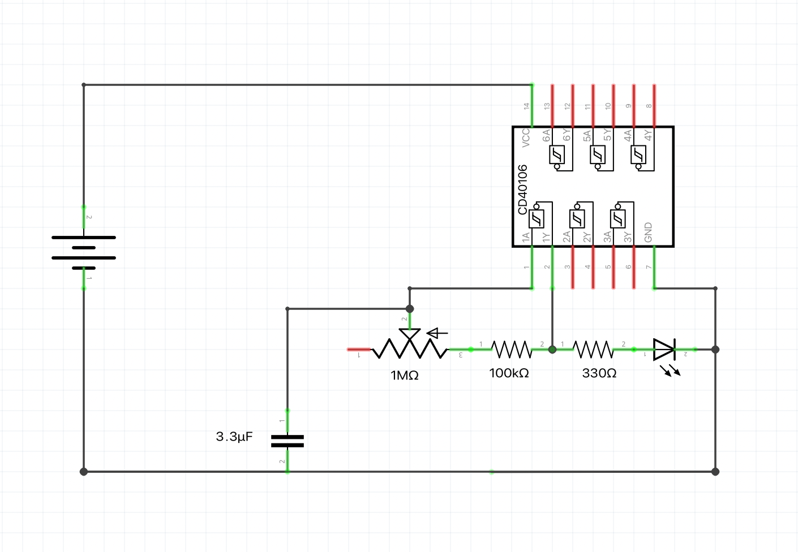
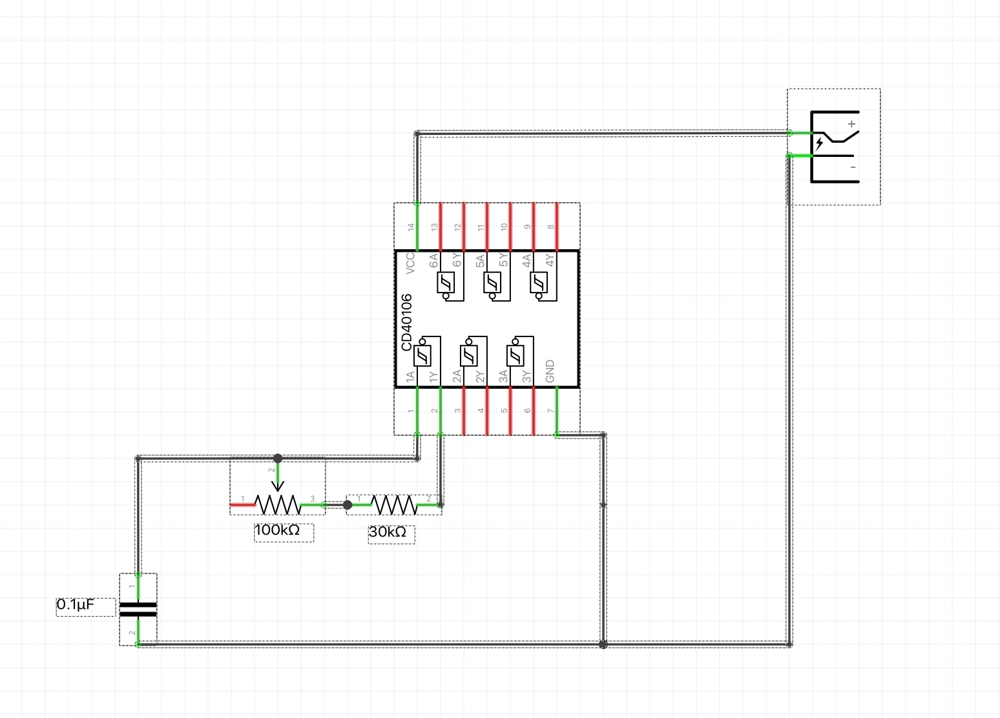
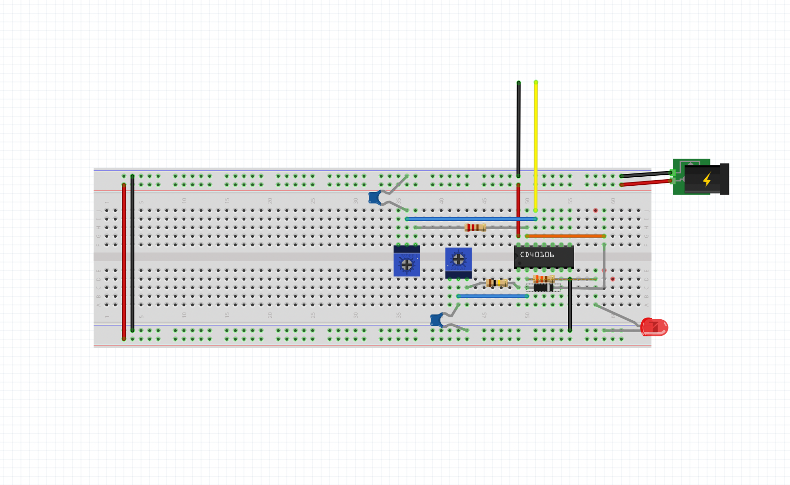

Point-to-point Construction

Manhattan Style Construction


"Dead Bug" Style


Peter Vogel

Senza Titolo, 1972
Mohit Bhoite


Eirik Brandal


Tristan Perich

ATmega328 (~$7)


Why?
Free the circuit and bring it to life.

Cheap and accessible.

Ernesto Oroza - Technological_Disobediance
Escape the computer and breadboard.

You'll learn a circuit well.
More fun and creative!

Leonardo Ulian
Quick Overview of Components and Schematics


Sub-Audio Oscillator with Variable Resistor and LED
Audio Level Oscillator with Variable Resistor
(185.5 - 776.5 Hz)
Gating an Audio Level Oscillator With a Sub-Audio Oscillator
